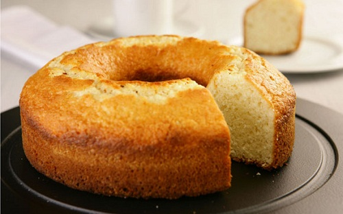

Receita - Bolo de Laranja

Ingredientes:
- Xícaras de chá de farinha de trigo (Sem fermento)
- 2 xícaras de chá de açúcar
- 3 ovos
- 200 ml de leite
- 4 colheres sopa de manteiga
- 1 colher de sopa de fermento químico em pó
Modo de preparo
- Numa tigela, junte os ovos, o açúcar e a manteiga.
- Misture tudo muito bem e adicione o leite.
- Continue misturando e depois adicione toda a farinha de trigo.
- Misture até que a massa fique bem homogênea.
- Por ultimo, adicione o fermento e misture delicadamente até que agregue completamente na massa.
- Despeje a massa do bolo simples caseiro numa forma untada e enfarinhada.
- Leve para assar em forno preaquecido, 180ºC, por cerca de 40 minutinhos ou até dourar.
Obrigado!
Página inicial. - Página de doces.
